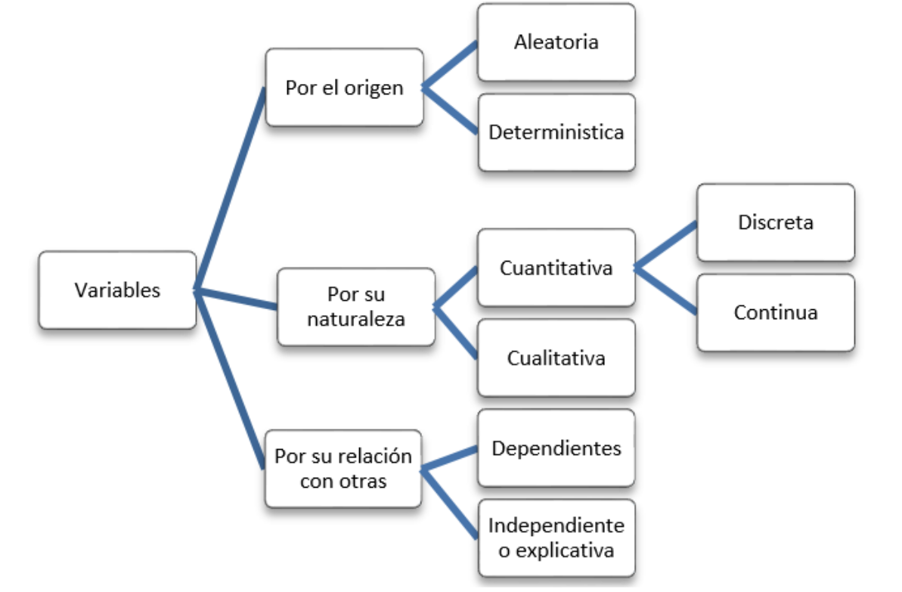
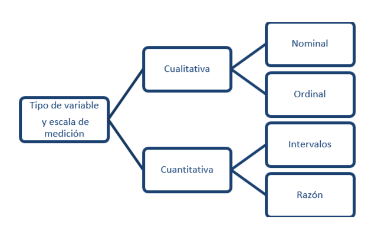

Conceptos Básicos
Estadística Básica
Pontificia Universidad Javeriana Cali
2023
Las siguientes definiciones estan relacionadas con métodologia empleadas en el proceso de la información para la toma de decisiones como son CRISP-DM (Cross-Industry Standard Process for Data Mining) o tambienTDSP (Team Data Science Process).
Estadistica descriptiva
Es una rama de la estadística que se centra en recopilar, organizar, resumir y presentar datos de manera informativa. Su objetivo principal es describir las características esenciales de un conjunto de datos, como tendencias, patrones, distribuciones y medidas de resumen, para ayudar a comprender y comunicar de manera efectiva la información contenida en esos datos.
Probabilidad
Es una medida numérica que cuantifica la posibilidad de que un evento ocurra. Se expresa como un número entre 0 y 1, donde 0 significa que el evento no ocurrirá y 1 significa que el evento es seguro que ocurra. Los valores intermedios representan diferentes niveles de posibilidad. Conformando una herramienta esencial en la estadística y en muchas áreas de la ciencia para la toma de decisiones informadas.
El calculo de la probabilidad se puede obtener bajo diferentes enfoques.
Enfoques:
Probabilidad clásica
Enfoque original de la probabilidad creado por Blaise Pascal y Pierre Fermat, dos grandes matemáticos al tratar de resolver un problema de juegos de azar propuesto por Antoine de Gombard, Chavalier de Meré.
Supone un conjunto de resultados finitos, con igual probabilidad de ocurrencia y del se requiere establecer la probabilidad de que ocurra un evento en particular.
\[P(A) = \dfrac{n(A)}{n(S)}\]
donde:
\(A\) es un evento, por ejemplo sacar dos al lanzar un dado.
\(S\) es el conjunto de todos los valores que puede tomar el experimento aleatoro, en este caso el lanzamiento de un dado.
\(n(A)\), el número de formas como puede ocurrir el evento \(A\), en este caso : 1. y
\(n(S)\): el número de elementos del espacio muestral, es decir el número de formas diferentes como puede resultar el lanzamiento de un dado (6).
\[P(A) = \dfrac{1}{6}\]
Probabilidad frecuentista :
Este enfoque toma como base una frecuencia relativa de un evento, bajo el supuesto de que lo ocurrido -pasado - continuará de la misma forma en el futuro.
\[P(A) = \lim_{n \to \infty}\dfrac{\text{número de veces que ocurre A}}{\text{tamaño de la muestra}}\]
En este caso la probabilidad se estima tomando una muestra de tamaño \(n\) y calculando la razón entre el número de veces en que se cumple el evento y el tamaño de la muestra. Este valor constituye un limite que converge a un valor que constituye la probabilidad.
Por ejemplo : la probabilidad que un cliente termine de pagar cumplidamente un crédito. Para ello se pueden obtener de la información disponible el número de clientes que han terminado el pago de sus creditos de manera cumplida sobre el total de clientes del banco.
Probabilidad subjetiva :
En el caso de no contar con información o requerir una estimación de la probabilidad de ocurrencia de un evento de manera rápida se recurre a la experiencia de un experto.
\[P(A) \gets \text{Experto}\] En este caso la probabilidad es valorada y asignada por un experto, como puede ser un médico, al estimar la probabilidad de exito de una operación, un mecánico al valorar la probabilidad de funcionamiento correcto de un auto despues de haber reparado una de sus puezas, o un financiero al estimar la probabilidad de exito de una inversión.
Variable aleatoria
Una variable aleatoria es una caracteristica o atributo que puede tomar diferentes valores, distinta naturaleza. El resultado de experimento aleatorio del cual auque se conosca los posibles resultados no se tiene certeza de cual de ellos finalmente se produzca. Por lo general estan asociadas a la medición o el conteo asignado a una caracteristica de un objeto o persona.
Tipos de variables
Las variables se puede clasificar de acuerdo a su origen, su naturaleza o su relación con otras variables

Por su origen
Una variable es aleatoria cuando los valores resultantes de una medición no son predecibles. Podría decirse que sus resultados se desconoce por completo. Si antes de medir, puede predecirse el valor que tendrá la variable, entonces se dice que ésta tiene carácter determinístico.
Por su naturaleza
Una variable es cuantitativa si denota características cuyos valores pertenecen al conjunto de los reales, tales como edad, peso y el sueldo de los empleados o el tiempo de vida de un equipo electrónico. Estas variables cuantitativas, a la vez se pueden clasificar en discretas o continuas.
La variable es discreta cuando el conjunto de valores que toma la variable es finito o infinito numerable y por lo general proceden del conteo como por ejemplo: número de hijos por familia, el número de transaciones registradas en un dia, número de clientes atendidos en una hora, presentando como expresión inicial “número de”.
Una variable es continua cuando el conjunto de valores que puede tomar la variable corresponde a un intervalo o a la unión de intervalos. Por lo general este tipo de variables estan relacionadas con la medición, como por ejemplo el peso de una persona, el interes generado por un CDT. Estas variagbles puede tomar cualquier valor en un intervalo de pesos determinado.
Por su relación con otras variables
Es frecuente que un estudio tenga por objetivo describir el comportamiento de una variable específica a partir de otras variables. Por ejemplo, El kilometraje de un auto puede informar sobre el tiempo de vida de dicho auto. En este caso, se habla de variables dependientes e independientes.
Escalas de medición
De acuerdo a su naturaleza las variables se pueden medir de acuerdo a las siguientes escalas:

Nominal
Corresponde a valores* no numéricos sin presencia de orden entre ellos. Solo es posibles la comparación de dos valores mediante la igualda o desegualdad :
- Dos empleados tienen el mismo cargo o sus cargos son diferentes. Por tal razón la variable cargo es una variable cualitativa en escala nominal.
Ordinal
Corresponde a valores no numéricos con presencia de orden entre ellos. Es posible realizar las comparaciones de dos valores y afirmar que son iguales, diferentes, que un representa un nivel menor o mayor que el otro.
- La evaluación del dempeño de un empleado puede ser valorada como : Excelente, Muy buena, Buena, Regular, Muy Regular
De intevalo
Corresponde a valores numéricos, dentro de los cuales solo tiene sentido la diferencia entre dos de sus valores. Podemos afirmar al comparar dos resultados que son iguales, diferentes, menor, mayor, tiene sentido la diferencia y el valor de cero no implica ausencia de la variable.
Como ejemplo de este tipo de escala tenemos la temperatura se pueden medir con varias escalas como:
- Celsius \(^{\circ} C\), (La escala Celsius fue creada Andrés Celsius (1742) . Esta escala tiene como referencia los puntos de congelación y ebullición del agua, límites que divide en 100 partes iguales
- Kelvin \(K\), Creada por William Thompson Kelvin (1848), en la que propone una transformación de la escala Celsius hasta un valor hipotético en el que hay ausencia de calor.
- Fahrenheit \(^{\circ}F\) Escala propuesta Gabriel Daniel Fahrenheit (1724), proponiendo una modificación a la escala Celsius En conclusión la variable temperatura se puede medir en varias escalas
En ocasiones variables de tipo cualitativo no observables de manera directa como : Clima laboral, Estrés, Inteligencia, Nivel de desempeño, Calidad, llamadas tambien variables anteriores debido a que su medición no es directa, sino que se realiza a través de preguntas que se recogen en un instrumento en muchos casos agrupados por factores. Cada respuesta en las preguntas tiene un valor o puntaje que es sumado y determina los niveles de la variable. Los valores dados a las respuestas pueden cambiar de instrumento a instrumento, pues existen escalas con 3 valores, otras con 5, 7 que que pueden representar una escala ordinal. A esta transformación numérica (suma de los puntajes obtenidos al totalizar los puntajes obtenidos) se conoce como operacionalización a escala de intervalo de una variable cualitativa, facilitando su interpretación.
De razón
Corresponde a valores numéricos, para los cuales además de la disigualdades (\(=\), \(\neq\), \(<\),\(>\)), tiene sentido la razón de dos de sus valores. Al comparar dos resultados de una variable cuantitativa de razón.
De este tipo de escala son por ejemplo : edad, sueldo, tiempo de atención, tiempo de respuesta, peso de un equipo portatil.
Respuesta o dependientes y explicativas o regresoras
La variable respuesta o dependiente corresponde a la variable que se estás tratando de predecir o pronosticar a partir de un modelo estadístico. Los valores de esta variable dependen o son influenciados por otras variables en el análisis.
Las variables explicativas, también llamadas variables independienteso regresoras, son aquellas que se utilizan para explicar o predecir las variaciones en la variable respuesta. Son las variables que se consideran como posibles factores que pueden influir en la variable respuesta.
Existe una relación entre la demanda de un bien y su precio, en este caso se puede construir un modelo que permita estimar la demanda de un bien (variable dependiente) a partir de su precio (variable independiente)
Inferencia Estadística
Es el proceso mediante el cual se hacen generalizaciones sobre una población basándose en la información recopilada de una muestra de esa población. Este proceso implica el uso de metodos y tecnicas estadísticas relacionadas con la selección de una muestra representativa, la estimación de una caracteristica de la población o la evaluación de una afirmación sobre una caracteristica de la población que realiza a través de una prueba de hipótesis.
Población
Población estadística es el total de individuos que presentan o podrían presentar el rasgo característico que se desea estudiar. Se distingue la población finita y la población infinita.
Censo
Investigación estadística que recopila información de todas las unidades que conforman la población de interés. Ejemplo: Censo de población que se realiza en nuestro pais por parte del DANE.
Parámetro
El valor de una caracteristica de interes obtenida del censo. Por ejemplo la proporción de hombre en nuestro pais es del 48.8%

Muestra
Subconjunto extraido de los elementos de la población. Ejemplo Gran Encuesta de Hogares con la que el DANE mide la tasa de desempleo en nuestro pais.
Estimador
Es una función de los valores obtenidos en una muestra que proporciona un valor cercano al valor del parametro o caracteristica de la población. Ejemplo : media muestral
\[\bar{x} = \dfrac{1}{n} \sum_{i=1}^{2} x_{i} = \dfrac{x_1 x_2 + x_3 \dots + x_n}{n}\] Donde : \(x_1 x_2 + x_3 \dots + x_n\) representa la información de la muestra de tamaño \(n\)
Muestreo
El método utilizado para la selección de la muestra se denomina muestreo y puede hacerse de manera
Muestreo probabilistico :
Cuando se utiliza un sistema externo aleatorio
Muestreo no probabilistica :
Cuando la selección de los elementos de la muestra se realiza a juicio del investigador o por convenicia del mismo
Pensamiento estadístico
El pensamiento estadístico es la habilidad y el enfoque mental para comprender, interpretar y tomar decisiones basadas en datos y probabilidades.
Implica el uso de herramientas y técnicas estadísticas para analizar patrones, identificar tendencias y hacer inferencias a partir de la información disponible. El pensamiento estadístico no se limita a los expertos en estadísticas; es una habilidad importante para cualquier persona que tome decisiones informadas en diversos campos.
Las características clave del pensamiento estadístico incluyen:
Recopilación y Análisis de Datos :
Implica la capacidad de recopilar, organizar y analizar datos relevantes de manera sistemática y efectiva. Incluye la selección de la mejor forma de representar los datos, la identificación de valores atípicos y la generación de conclusiones a partir de los datos.
Inferencia y Generalización:
Corresponde a la capacidad de hacer inferencias sobre una población más amplia en función de la información de una muestra. Esto incluye la comprensión de los conceptos de intervalos de confianza y la interpretación de resultados de pruebas de hipótesis.
Probabilidad y Riesgo:
Implica evaluar la probabilidad de eventos futuros y comprender cómo se relacionan con la toma de decisiones. Incluye la evaluación del riesgo en diversas situaciones.
Variabilidad y Tendencias:
Incluye la comprensión de la variabilidad natural en los datos y cómo se pueden identificar tendencias o patrones a pesar de esta variabilidad.
Comunicación Efectiva:
Por último involucra la habilidad de comunicar los resultados y las conclusiones de manera clara y comprensible para personas no especializadas en estadísticas.